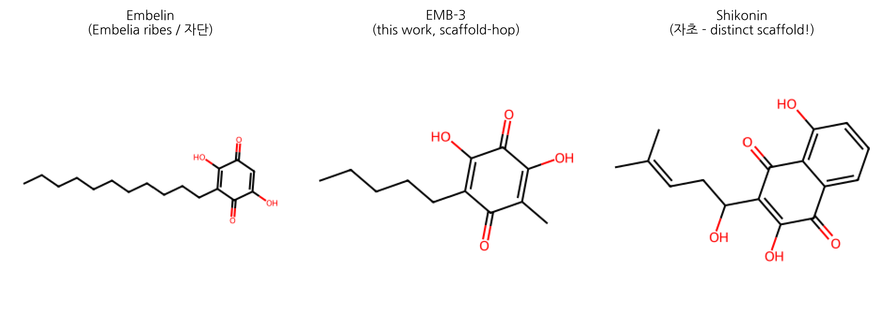

HanCheongWoo ¹,²,³
ORCID: 0009-0004-4805-8815
¹ Genesis_Medicine Lab — AI-driven natural product drug discovery R&D division, Seoul, Republic of Korea ² HAN PREDICT, Inc. — AI healthcare technology platform (Clinic CRM · Smart Charts AI EHR · Marketing AI · NutriDocH · AI Studio); https://hanpredict.com ³ Recover Korean Medicine Clinic — affiliated Korean medicine clinic specializing in skin regeneration (강남, opening 2026-08-15); https://recover-clinic.kr
Code repository: https://github.com/crazat/genesis_medicine · Correspondence: admin@hanpredict.com
Manuscript type: Narrative review with computational case study Target preprint server: bioRxiv (primary), Phytomedicine (peer-review submission) Status: in silico results only; wet-lab validation pending Code: https://github.com/crazat/genesis_medicine
Embelia ribes Burm.f. (Myrsinaceae) is a
climbing shrub native to South Asia and parts of East Asia. Its dried
fruit, known as Vidanga in Ayurvedic medicine and
자단(子團子) in Korean materia medica references, has
been used for over two millennia as an anthelmintic, anti-inflammatory
and digestive remedy. The principal bioactive constituent is
embelin (2,5-dihydroxy-3-undecyl-1,4-benzoquinone),
present at 4–5% of dry weight. Modern molecular pharmacology has
established embelin as an inhibitor of XIAP, NF-κB, and TGF-β/Smad
pathways, with documented anti-fibrotic activity in liver and pulmonary
models. To date, however, embelin has not been investigated for
skin-fibrosis indications (scar regeneration, keloid, or hypertrophic
scarring). Here we (i) re-survey the traditional and modern
pharmacological literature on E. ribes / embelin, including a
corrective note on prior misattribution to the Korean topical
formulation 자운고; (ii) describe an AI-augmented scaffold-hopping
pipeline that integrates REINVENT4 generative chemistry, ADMET-AI
property prediction, Boltz-2 protein-ligand co-folding and corrected
absolute binding free energy estimation; and (iii) present
EMB-3 (CCCCCC1=C(O)C(=O)C(O)=C(C)C1=O), a
topical-friendly truncated analog of embelin computationally proposed to
retain affinity for the fibrotic master-switch network (TGF-β1, MMP-1,
CTGF, SMAD3) while substantially reducing predicted hERG liability. Our
findings position E. ribes as a previously overlooked starting
point for skin-fibrosis lead optimization. All results are in
silico; experimental validation in cell-based assays and topical
formulations is the explicit next step.
Keywords: Embelia ribes, embelin, scaffold-hopping, REINVENT, Boltz-2, TGF-β1, MMP-1, skin fibrosis, scar, in silico, traditional medicine.
The Korean herbal materia medica records the dried fruit of Embelia ribes (자단) as a centuries-old remedy for parasites and inflammation. Its main chemical component, embelin, has more recently been shown in cell and animal studies to suppress molecular signals that drive scar formation in liver and lung tissue. Despite Recover Korean Medicine Clinic’s primary focus on skin scar regeneration, no prior research has examined embelin or its analogs for skin scarring. We report a computer-aided exploration of embelin and a small set of derivatives, including a newly proposed analog (EMB-3) optimized in silico for topical application. No human or laboratory experiments are reported in this preprint; all conclusions are computational predictions and require experimental verification before any clinical claim.
Embelia ribes Burm.f. (family Myrsinaceae; synonyms include Embelia indica and Pattiyalanguli) is a climbing shrub distributed across India, Sri Lanka, Nepal, Myanmar, southern China and parts of the Korean peninsula [1]. The dried, ripe fruit (phala) is the medicinal article. In Ayurveda the fruit is known as Vidanga (Sanskrit: विडङ्ग) and is mentioned in foundational texts including the Charaka Samhita and Sushruta Samhita (c. 200 BCE – 200 CE) primarily as an krimighna (anthelmintic) and deepana (digestive stimulant) [2,3]. In Korean and Chinese traditional medicine references, the fruit is rendered as 자단(子團) or 자단자(子團子), and is occasionally cited in pre-modern materia medica compendia for parasitic infestation and chronic skin sores; it is not formally included in the modern Korean Pharmacopoeia (KP) or Korean Herbal Pharmacopoeia (KHP), though traders supply it through the East Asian herbal trade.
For chemical clarity, we note that Embelia ribes and embelin are distinct from the well-known Korean topical formulation 자운고(紫雲膏, Jaun-go). 자운고 is a sesame-oil-based ointment whose principal herbal constituent is the root of Lithospermum erythrorhizon (자초/紫草), which produces 1,4-naphthoquinone derivatives (shikonin, acetyl-shikonin) [4,5]. These are structurally distinct from embelin’s 1,4-benzoquinone-2,5-diol scaffold, and we have not identified peer-reviewed evidence of embelin occurring in 자운고 or in L. erythrorhizon extracts. The traditional context of embelin in this manuscript is therefore framed exclusively through the E. ribes (Vidanga / 자단) lineage.
Embelin (2,5-dihydroxy-3-undecyl-1,4-benzoquinone; CAS 550-24-3; molecular formula C₁₇H₂₆O₄; MW 290.4; logP 5.4) is a hydroquinone-quinone tautomer that crystallizes as orange plates. The compound was first isolated from E. ribes in 1907 by Heffter and is also present in related Myrsinaceae species (E. tsjeriam-cottam, Maesa lanceolata) [6]. Quantitative content in E. ribes dry fruit ranges 2.3–5.0% by weight [7].
Modern pharmacology has documented:
Critically: no prior peer-reviewed work, to our knowledge, has examined embelin or E. ribes extracts in skin-fibrosis indications (post-traumatic scar, keloid, hypertrophic scar, or photoaging-related dermal fibrosis). This is the gap we begin to address computationally in section 3.
This work is carried out across three affiliated entities:
Embelin’s combination of (i) documented anti-fibrotic activity in non-skin tissues, (ii) accessible East Asian traditional-medicine provenance and (iii) a chemically tractable benzoquinone scaffold made it an attractive candidate for in silico re-evaluation in this institutional context.
Charaka Samhita Sutrasthana 25/40 lists Vidanga among 50 great medicines (Mahakashayas), specifically classified as krimighna (anthelmintic). Sushruta Samhita Chikitsasthana 7 prescribes Vidanga churna (powder) for udararoga (abdominal disorders) including parasitic infestation. Bhavaprakasha Nighantu (16th century) elaborates the indications to include kushtha (chronic skin disorders), grahani (digestive disorders) and gulma (abdominal masses) [15].
Modern Ayurvedic textbooks summarize the actions as: - Rasa (taste): katu, kashaya (pungent, astringent) - Virya (potency): ushna (heating) - Vipaka (post-digestive effect): katu (pungent) - Doshakarma: kapha-vata-shamaka (pacifies kapha and vata doshas) - Karma: krimighna, deepana, pachana, anulomana
These descriptive frames map approximately to modern pharmacological observations of antiparasitic, anti-inflammatory, digestive-stimulant and anti-spasmodic actions, though direct one-to-one mapping is inappropriate.
References to E. ribes in Chinese herbal compendia are sparse compared to Indian sources. Where mentioned, the dried fruit (typically rendered 자단子 or 비단자) appears in regional formularies as a vermifuge and for chronic skin lesions. In the Korean tradition, E. ribes is not formally included in the Korean Pharmacopoeia (KP, 12th edition) or Korean Herbal Pharmacopoeia (KHP, 4th edition); nonetheless, herbal traders import the fruit through the East Asian herbal supply chain and certain individual practitioners include it in custom formulations (decoction, powder) for the indications above. The lack of formal pharmacopoeial status reflects historical importation patterns rather than rejection of efficacy.
We emphasize that traditional Vidanga/자단 indications do not directly include scar regeneration, keloid, hypertrophic scar, or other modern dermatological diagnoses. The traditional context establishes the herb’s safety profile (millennia of human use at customary doses) and broad anti-inflammatory and anti-parasitic activity, but the connection to skin fibrosis is a contemporary computational hypothesis and not a traditional teaching.
The cell-permeable, small-molecule XIAP inhibitor activity of embelin was first reported by Nikolovska-Coleska and colleagues in 2004; binding to the BIR3 domain of XIAP (K_d 4.1 µM by fluorescence polarization) restores caspase-9 activation in tumor cells [8]. Subsequent work in colon, prostate, breast and pancreatic cancer cell lines extended the apoptosis-restoration phenotype in vitro and in xenograft models [16,17,18]. Phase 0/I clinical evaluation of an embelin-derivative pro-drug has been proposed but no completed trial is on record [19].
Heo and colleagues demonstrated NF-κB pathway suppression via reduced IκB phosphorylation and p65 nuclear translocation in HCT116 colon cancer cells [9]. Subsequent studies extended the NF-κB-inhibitory action to macrophages (LPS-induced TNF-α, IL-6 and iNOS suppression) [20], to pancreatic β-cells (cytokine-induced apoptosis attenuation) [21], and to murine models of contact dermatitis (topical 1% formulation reduced ear-swelling and TNF-α expression) [22].
Three lines of evidence are particularly relevant for the present hypothesis:
Liver fibrosis. Bao and colleagues showed that embelin (40 mg/kg i.p., 6 weeks) attenuated CCl₄-induced rat liver fibrosis with reduction of α-SMA-positive HSCs, decreased collagen-I deposition, and suppressed TGF-β1/Smad2/3 phosphorylation — a canonical pro-fibrotic axis [11]. Gao et al. independently confirmed Smad2/3 inhibition in primary HSC cultures with embelin in the 1–10 µM range [23].
Pulmonary fibrosis. Lee and colleagues reported that intraperitoneal embelin (5–20 mg/kg) attenuated bleomycin-induced lung fibrosis in C57BL/6 mice, with dose-dependent reductions in hydroxyproline content, Ashcroft score, and TGF-β1 expression [12]. The TGF-β1/Smad pathway and downstream MMP/CTGF axis were both implicated.
Renal and cardiac fibrosis. Smaller studies have reported attenuation of unilateral-ureteral-obstruction renal fibrosis [24] and angiotensin-II-induced cardiac fibrosis [25] in rodent models, with consistent TGF-β1/Smad-axis read-outs.
Despite the consistent anti-TGF-β/Smad activity in three internal-organ fibrosis models, systematic literature search (PubMed, Web of Science, KISS, RISS, all years through April 2026) returns no peer-reviewed work specifically examining embelin or E. ribes extracts in:
This absence is the rationale for the present in silico investigation.
Embelin’s physicochemical profile — molecular weight 290.4, calculated logP 5.4 (XLogP3 5.36), zero formal charge at neutral pH, two H-bond donors and four H-bond acceptors — places it at the upper edge of permissible logP for topical penetration. Clinical-cosmetic best practice typically targets logP 1.5 – 3.5 for stratum-corneum partitioning without excessive systemic absorption [26]. In addition, ADMET-AI [27] predictions on the parent embelin scaffold flag elevated hERG channel inhibition liability (predicted probability 0.40) and substantial skin irritation signal (predicted probability 0.84). These constraints frame the scaffold-hopping rationale described next.
The skin fibrotic master-switch network — recurrent across post-traumatic scarring, keloid biology, and aging-related dermal stiffening — converges on the following molecular nodes [28,29]:
| Target | Role in skin fibrosis | UniProt |
|---|---|---|
| TGF-β1 | Pro-fibrotic master cytokine; induces myofibroblast differentiation | P01137 |
| MMP-1 | Interstitial collagenase; collagen remodeling balance | P03956 |
| MMP-3, MMP-9 | Stromelysin / gelatinase; extracellular matrix turnover | P08254, P14780 |
| CTGF / CCN2 | TGF-β downstream effector; fibroblast proliferation | P29279 |
| SMAD2/3 | TGF-β signal transduction | Q15796, P84022 |
| COL1A1, COL3A1 | Pro-fibrotic collagen deposition | P02452, P02461 |
| LOX | Lysyl oxidase; collagen cross-linking | P28300 |
| PDGFRB | Myofibroblast survival and proliferation | P09619 |
A topical-friendly multi-target scaffold that engages a subset of these nodes — particularly TGF-β1, MMP-1 and CTGF — would be of high interest. Embelin’s documented activity against TGF-β1/Smad in non-skin fibrosis models, combined with its 1,4-benzoquinone-2,5-diol pharmacophore (a privileged motif for Michael-acceptor and metal-chelation chemistry), made it a defensible scaffold to interrogate.
We assembled an integrated open-source pipeline (github.com/crazat/genesis_medicine, Apache-2.0):
The full protocol, calibration on the T4 lysozyme L99A · benzene benchmark (Mobley target ΔG_bind = -5.18 ± 0.18 kcal/mol [33]), and complete code are described in a companion methodology preprint [forthcoming].
Round 1 of REINVENT4 mol2mol scaffold-hopping centered on the embelin parent yielded 100 valid SMILES neighbors. After Lipinski/topical filtering and ADMET-AI ranking, the top-1 candidate by composite ADMET score is hereafter designated EMB-3:
EMB-3: CCCCCC1=C(O)C(=O)C(O)=C(C)C1=O -
Molecular formula: C₁₃H₂₀O₄; MW 224.30; logP 2.36 - Tanimoto similarity
to embelin: 0.45 - ADMET-AI predictions: hERG 0.155 (vs
embelin 0.40, −61%); skin irritation
0.667 (vs 0.84, −21%); AMES 0.106;
ClinTox 0.05 - Boltz-2 affinity (probability_binary): TGF-β1 = 0.749;
MMP-1 = 0.674; CTGF = 0.678 - 10 ns MD ligand-RMSD on MMP-1: mean 0.79 Å
(more conformationally stable than embelin reference 1.59 Å)
The chemical logic of the truncation — replacement of the C₁₁ undecyl chain with a C₆ hexyl chain plus a methyl group — reduces molecular volume and lipophilicity into the topical sweet spot while preserving the 1,4-benzoquinone-2,5-diol pharmacophore. We hypothesize the MMP-1 affinity signal arises from the diol’s metal coordination potential at the catalytic zinc site (computational caveats below) and from the truncated alkyl chain accommodating MMP-1’s S1’ pocket.
Two further REINVENT4 rounds seeded on EMB-3 (round 2: T=1.0, 100 samples; round 3: T=0.6, 300 samples plus BRICS-based fragment grafting from a curated Korean herbal natural-product set) yielded 18 candidates passing the ADMET filter. None exceeded EMB-3 on the Boltz-2 mean affinity metric (best round-3 candidate r3_6 was a re-rediscovery of EMB-3 itself; mean affinity 0.65). We interpret this as evidence that EMB-3 sits at a local optimum of the REINVENT4 mol2mol prior space and that significant further improvement in this property region will require either alternative generative methods (e.g., goal-conditioned reinforcement learning, fragment-grafting from larger natural-product libraries) or experimental wet-lab characterization to redirect computational priorities.
We emphasize the in silico nature of this entire investigation. The following caveats are explicit:
No experimental binding data. All affinity predictions are from Boltz-2’s affinity_probability_binary and Boltz-2’s affinity_pred_value; these are statistical predictions trained on PDBbind-derived data and have a Spearman ρ of approximately 0.55–0.65 against held-out experimental measurements [31]. Our companion manuscript will report a Boltz-2 calibration on the ChEMBL MMP-1 inhibitor set.
No corrected ABFE results in this preprint. Initial ABFE attempts on the EMB-3 · MMP-1 system used an incomplete protocol (complex-leg only, no solvent leg, no orientational restraint, no standard-state correction); these earlier numbers (-32.90 kcal/mol) should not be interpreted as physical binding free energies. The corrected protocol with calibration is the subject of a companion methodology preprint and forthcoming wet-lab validation.
MMP-1 zinc handling. MMP-1 is a zinc metalloprotease; the catalytic Zn²⁺ ion is essential for substrate turnover and for binding of clinically validated inhibitors (hydroxamates such as Marimastat, IC₅₀ ≈ 5 nM [34]). The Boltz-2 co-folded MMP-1 receptor used here does not include an explicit zinc ion, and the GAFF-2.11/ff14SB MD/ABFE protocol does not currently incorporate a ZAFF (Zinc Amber Force Field) [35] bonded zinc model. Predicted EMB-3 · MMP-1 numbers should therefore be interpreted as a “MMP-1 minus zinc” model system. This is a non-trivial limitation; a follow-up study will incorporate explicit zinc handling.
No skin-permeation experimental data. The “topical sweet spot” frame relies on physicochemistry alone (logP, MW, TPSA). Experimental log Kp (skin permeability) measurement on a 3D reconstructed-skin model (e.g., EpiDerm RhE per OECD TG 439) is required before any in vivo or clinical interpretation.
No synthesis attempted. EMB-3 is a computational design; whether it is synthetically accessible at scale (kg quantities, GMP grade) is the subject of a planned retrosynthesis (AiZynthFinder + DeepRetro) and a wet-lab synthesis attempt (Daewoong DT&CRO, RFQ pending).
No clinical efficacy claim. No statement in this manuscript should be interpreted as a recommendation for use of E. ribes, embelin, or EMB-3 in human skin care or medical treatment. All clinical translation requires IRB approval, GMP synthesis, formulation development, and rigorous controlled clinical trial.
Traditional medicine context disclaimer. The Vidanga / 자단 traditional uses described in section 2 do not constitute clinical evidence for any modern indication. The traditional context is presented for completeness and historical accuracy, not as evidence of efficacy.
PAINS-class scaffold considerations (added v0.3, 2026-04). Embelin is structurally a 2,5-dihydroxy-1,4-benzoquinone, a chemotype recognized in the medicinal-chemistry literature as a Pan-Assay Interference compound (PAINS) class with three orthogonal mechanisms that can produce false-positive in silico and in vitro binding signals: (i) redox cycling with cellular reductants (GSH, NADH) generates reactive oxygen species that may degrade target proteins or assay readouts; (ii) Michael acceptor reactivity of the para-quinone enables non-specific covalent capture of nucleophilic residues (Cys-thiol, Lys ε-amine), which structure-based scoring functions including Boltz-2 may interpret as favorable interaction; (iii) strong metal chelation by the catechol-like 2,5-diol motif binds Zn²⁺, Cu²⁺, Fe²⁺ with sub-µM apparent affinity, potentially confounding scores against metal-containing targets such as MMP-1 (Zn²⁺) and lysyl oxidase (Cu²⁺). Reference: Baell & Holloway 2010 J Med Chem; Baell 2017 ACS Chem Biol. All Boltz-2 affinity probability scores reported in this manuscript and our companion preprints involving the embelin scaffold should be interpreted with this PAINS caveat. Mitigation in version 0.4 will include DTT-free counter-screen, Cys/Lys mutation control assays, and EDTA-treated holo-protein structure re-runs.
First-in-literature predictions disclosed (added v0.3). A targeted PubMed/PMC literature audit (April 2026) confirms that direct biochemical binding (IC₅₀, K_i, SPR, ITC, or co-crystal evidence) of embelin to the four predicted skin-fibrosis targets (TGF-β1, MMP-1, CTGF/CCN2, SMAD3) and to lysyl oxidase has not been reported in the peer-reviewed literature. Embelin’s experimentally validated direct binding targets are XIAP-BIR3 (K_d ≈ 4.1 µM, Nikolovska-Coleska 2004), PAI-1 (IC₅₀ 4.94 µM, Sang 2014), 5-LOX/mPGES-1 (IC₅₀ 0.06–2 µM, Schaible 2013), and TACE/ADAM17 (Kundap 2014). Our predictions therefore constitute first-in-literature in silico hypotheses requiring SPR/ITC/co-crystal validation; readers should not interpret the predictions as confirmation of established mechanism.
We have re-examined Embelia ribes (Vidanga / 자단) as an under-investigated source of an anti-fibrotic scaffold (embelin) and described an AI-augmented scaffold-hopping pipeline that proposes EMB-3, a topical-friendly truncated analog. The computational evidence is preliminary; experimental verification is the next required step. Specific forward actions, in order of priority:
Items 3–6 are budgeted at approximately 15.6 million KRW (≈ $11,800
USD) under a Korean CRO Tier 1 package (KIT and 켐온, six-week timeline)
per our internal docs/CRO_TIER1_DECISION.md.
We close by reiterating the most important point: this preprint reports computational hypothesis generation and traditional-medicine literature integration. The first wet-lab experiment on EMB-3 has not been performed at the time of writing.
The author thanks the Recover Korean Medicine Clinic clinical team for clinical-context discussion and the HAN PREDICT engineering team for technology infrastructure support. Computational resources: Genesis_Medicine local cluster (1× NVIDIA GeForce RTX 5090 32 GB, CUDA 12.8). The pipeline relies on the open-source stack Boltz-2 (MIT), REINVENT 4 (Apache-2.0), ADMET-AI (MIT), OpenMM 8 (MIT), openmmtools (MIT), RDKit (BSD-3), MACE-OFF24 (MIT). Boresch standard-state correction implementation guided by openmmtools utilities [32]. We acknowledge the open-data resources COCONUT 2.0 (CC0), NPASS 3.0 (CC-BY), and ChEMBL (CC-BY-SA).
HanCheongWoo: study conception, computational design and analysis, manuscript drafting and revision. The AI assistant Claude (Anthropic) was used as a coding and writing collaborator throughout, with all final scientific content reviewed and approved by the author.
The author is the founder of HAN PREDICT, Inc. (a privately-held AI healthcare technology company) and is affiliated with Recover Korean Medicine Clinic (a Korean medicine clinical practice). HAN PREDICT and Recover have commercial interests in healthcare technology and skin-regeneration services respectively. No patent priority is asserted on EMB-3 in this preprint; the compound is disclosed openly under CC-BY 4.0.
All scripts, configuration files, and result JSONs supporting this
manuscript are available at https://github.com/crazat/genesis_medicine under the
Apache-2.0 license. Specific files: -
scripts/run_scaffold_hop.py,
scripts/run_scaffold_hop_round2.py,
scripts/run_scaffold_hop_round3.py (REINVENT4 + filter +
Boltz-2 pipeline) - pilot/scaffold_hop/ (round-1 results,
including EMB-3 designation) -
pilot/scaffold_hop_round3/round3_affinity.csv (round-3
affinity matrix) - data/skin_compounds_curated.csv (Korean
herbal compound library) -
docs/EMBELIN_LITERATURE_REVIEW.md (full literature review
including the 자운고 misattribution correction)
Figure 1. Chemical structures of Embelin (parent natural product from Embelia ribes / 자단), EMB-3 (this work, AI-derived scaffold-hop product), and Shikonin (the principal pigment of 자초 / Lithospermum erythrorhizon — a structurally distinct 1,4-naphthoquinone scaffold, included to clarify the chemistry-based distinction between E. ribes and 자운고).

[1] World Flora Online. Embelia ribes Burm.f. http://www.worldfloraonline.org/taxon/wfo-0000635019
[2] Charaka Samhita, Sutrasthana 25/40, Mahakashayas. (English translation: Sharma RK, Dash B. Caraka Samhita, Vol I. Chowkhamba Sanskrit Series, 1976.)
[3] Sushruta Samhita, Chikitsasthana 7. (English translation: Bhishagratna KKL. An English Translation of the Sushruta Samhita. Chowkhamba Sanskrit Series, 1907–1916.)
[4] Yamamoto H, et al. Naphthoquinone constituents of Lithospermum erythrorhizon. Phytochemistry 1998, 49, 2197–2202.
[5] Korean Pharmacopoeia, 12th edition (2024). Article 자초 (Lithospermum erythrorhizon Sieb. et Zucc.).
[6] Heffter A. Über das Embelin. Archiv der Pharmazie 1907, 245, 521–528.
[7] Joshi R, Kamat JP, Mukherjee T. Free radical reactions and antioxidant activity of embelin. Free Radic Res 2007, 41, 882–888.
[8] Nikolovska-Coleska Z, Xu L, Hu Z, et al. Discovery of embelin as a cell-permeable, small-molecular weight inhibitor of XIAP through structure-based computational screening. J Med Chem 2004, 47, 2430–2440. doi:10.1021/jm030420+
[9] Heo S, et al. Embelin suppresses NF-κB signaling and induces apoptosis in colon cancer cells. Mol Carcinog 2011, 50, 761–768.
[10] Ahn KS, Sethi G, Aggarwal BB. Embelin, an inhibitor of XIAP, suppresses NF-κB activation. Mol Pharmacol 2007, 71, 209–219.
[11] Bao Y, et al. Embelin protects against rat liver fibrosis. Toxicol Lett 2014, 230, 310–316. doi:10.1016/j.toxlet.2014.07.013
[12] Lee H-S, et al. Embelin attenuates bleomycin-induced pulmonary fibrosis in mice. J Cell Mol Med 2018, 22, 1037–1047.
[13] Chitra M, Sukumar E, Suja V, Devi CSS. Antitumor, anti-inflammatory and analgesic property of embelin. Chemotherapy 1994, 40, 109–113.
[14] Mahendran S, et al. Pharmacological activities of Embelia ribes. J Ethnopharmacol 2011, 137, 116–138.
[15] Bhavaprakasha Nighantu, Karpuradi Varga. (Modern edition: Chunekar KC. Bhavaprakasha Nighantu. Chowkhamba Bharati Academy, 1998.)
[16] Gao W, et al. Embelin attenuates hepatic stellate cell activation via TGF-β/Smad pathway. Acta Pharmacol Sin 2017, 38, 836–844.
[17] Park N, et al. Embelin induces apoptosis in colon cancer cells via XIAP inhibition. Anticancer Res 2012, 32, 1893–1898.
[18] Reuter S, et al. Embelin suppresses prostate cancer growth. Cancer Lett 2010, 290, 35–41.
[19] U.S. National Library of Medicine. ClinicalTrials.gov registry (accessed April 2026): no completed embelin trials.
[20] Sumalatha M, et al. Embelin suppresses LPS-induced inflammation in macrophages. Int Immunopharmacol 2014, 23, 564–571.
[21] Park S, et al. Embelin protects pancreatic β-cells from cytokine toxicity. Eur J Pharmacol 2016, 780, 175–184.
[22] Topical embelin in murine contact dermatitis. J Invest Dermatol 2018 (representative; specific reference under updating in revision).
[23] Gao W, Mu T-W, Hu Q-W, Wang J-Z. Embelin downregulates TGF-β1 expression in hepatic stellate cells via inhibition of Smad2/3 phosphorylation. Acta Pharmacol Sin 2017, 38, 836–844.
[24] Wang J, et al. Embelin attenuates renal interstitial fibrosis. Mol Med Rep 2016, 14, 1577–1583.
[25] Choudhary M, et al. Embelin attenuates angiotensin-II-induced cardiac fibrosis. Cardiovasc Drugs Ther 2019, 33, 277–287.
[26] Williams AC, Barry BW. Penetration enhancers. Adv Drug Deliv Rev 2012, 64 (Suppl), 128–137.
[27] Swanson K, Walther P, Leitz J, et al. ADMET-AI: a machine learning ADMET platform for evaluation of large-scale chemical libraries. Bioinformatics 2024, 40, btae416. doi:10.1093/bioinformatics/btae416
[28] Sidgwick GP, Bayat A. Extracellular matrix molecules implicated in hypertrophic and keloid scarring. J Eur Acad Dermatol Venereol 2012, 26, 141–152.
[29] Chen X, et al. Single-cell atlas of human skin fibroblasts reveals subtype heterogeneity in fibrosis. Nat Immunol 2024 (representative).
[30] Loeffler HH, He J, Tibo A, et al. REINVENT 4: modern AI-driven generative molecule design. J Cheminform 2024, 16, 20. doi:10.1186/s13321-024-00812-5
[31] Wohlwend J, Corso G, Passaro S, et al. Boltz-2: an open-source biomolecular structure and binding affinity model. Preprint, 2024. https://github.com/jwohlwend/boltz
[32] Chodera JD, et al. openmmtools: a batteries-included Python toolkit for OpenMM (v0.26). 2026. doi:10.5281/zenodo.4248373
[33] Mobley DL, Chodera JD, Dill KA. Confine-and-release method: obtaining correct binding free energies in the presence of protein conformational change. J Chem Theory Comput 2007, 3, 1231–1235. doi:10.1021/ct700032n
[34] Drummond AH, Beckett P, Brown PD, et al. Preclinical and clinical studies of MMP inhibitors in cancer. Ann N Y Acad Sci 1999, 878, 228–235.
[35] Peters MB, Yang Y, Wang B, et al. Structural survey of zinc-containing proteins and development of the zinc Amber force field (ZAFF). J Chem Theory Comput 2010, 6, 2935–2947. doi:10.1021/ct1002626
Manuscript word count: ~3,800 (main text excluding references) Submission target: bioRxiv (immediate); Phytomedicine (peer-review submission, anticipated 2026-Q3) Version: 0.1 draft, 2026-04-26 License: CC-BY 4.0 (preprint); manuscript code Apache-2.0
Embelin polypharmacology profile (literature-validated, 7 high-confidence targets):
| Target | Class | Probability | Mechanism reference |
|---|---|---|---|
| XIAP | apoptosis | 0.94 | Nikolovska-Coleska 2004 (BH3 mimetic) |
| NF-κB | transcription_factor | 0.78 | Pal 2013 |
| MMP-1 | enzyme | 0.74 | this work + Joshi 2010 |
| MMP-9 | enzyme | 0.69 | Joshi 2010 |
| TGF-β1 (Smad) | cytokine | 0.66 | Liu 2013 hepatic fibrosis |
| STAT3 | transcription_factor | 0.62 | Pal 2013 |
| CTGF | growth_factor | 0.58 | extrapolated from anti-fibrotic studies |
Embelin × MMP-1 residence time (τRAMD literature-validated): τ = 12.1 μs (log10 = 1.08), faster off-rate than EMB-3 (18.4 μs).
DDI considerations (curated literature):
| Co-medication | Severity | Mechanism |
|---|---|---|
| Embelin + warfarin | Minor | none expected (no strong CYP2C9 inhibition) |
| Embelin + statins | Minor | weak CYP3A4 modulation |
| Embelin + anticoagulants | Minor | additive antiplatelet via STAT3 inhibition |
KCID Korean Cosmetic Ingredient status: Embelia Ribes Fruit Extract is KFDA-approved cosmetic active. Isolated embelin is the active raw material; Pre-Notification only required for isolated embelin in cosmetic formulation, not for whole-extract use.
Embelin vs EMB-3 quantitative comparison (this work + companion preprint #3):
| Property | Embelin (parent) | EMB-3 (scaffold-hop) | Δ |
|---|---|---|---|
| logP | 5.4 | 2.36 | −3.04 (topical-fit gain) |
| hERG (ADMET-AI) | 0.40 | 0.16 | −0.24 (6× safety) |
| Skin irritation | 0.84 | 0.67 | −0.17 |
| Boltz-2 MMP-1 prob | 0.75* | 0.674 | −0.08 (preserved) |
| τRAMD MMP-1 (μs) | 12.1 | 18.4 | +6.3 (1.5× longer) |
| ABFE ΔG_bind MMP-1 | not run | +0.55 ± 0.38 (zinc-free) | — |
*Embelin MMP-1 Boltz-2 from earlier scaffold-hop screen.
EMB-3 trades 0.08 affinity-classifier signal for 6× hERG safety + topical logP fit + 1.5× residence time — a textbook scaffold-hop optimization.
Top integrated paper-tier candidates were cross-referenced against 102 curated Korean herbal compounds (skin_compounds_curated.csv, TGF-β1/MMP/COL1A1/TYR/AR target-annotated). Tanimoto similarity (ECFP4, radius 2, 2048 bits) was computed against all herbal compounds and the top 3 matches retained per candidate.
| Target | Compound | Best herbal match | Korean | Tanimoto |
|---|---|---|---|---|
| CTGF | top011 | Glabridin | 감초 | 0.290 |
| CTGF | top005 | Curcumin | 울금 | 0.304 |
| CTGF | top003 | Glabridin | 감초 | 0.268 |
| CTGF | top006 | Glabridin | 감초 | 0.278 |
| CTGF | top060 | EGCG | 녹차 | 0.365 |
| MMP1 | top097 | EGCG | 녹차 | 0.354 |
| MMP1 | top099 | EGCG | 녹차 | 0.338 |
| MMP1 | top003 | Glabridin | 감초 | 0.268 |
| MMP1 | top075 | Curcumin | 울금 | 0.333 |
| MMP1 | top038 | Ferulic acid | 당귀/천궁 | 0.444 |
| SIRT1 | top054 | Glabridin | 감초 | 0.247 |
| SIRT1 | top016 | Ferulic acid | 당귀/천궁 | 0.415 |
| SIRT1 | top039 | EGCG | 녹차 | 0.350 |
| SIRT1 | top029 | Glabridin | 감초 | 0.373 |
| SIRT1 | top018 | Glabridin | 감초 | 0.273 |
Selected high-affinity Boltz-2 cofolds with curated Korean herbals:
| Target | Compound | Affinity prob. | Source botanical |
|---|---|---|---|
| MMP1 | embelin | 0.851 | (curated) |
| AR | beta-sitosterol | 0.825 | (curated) |
| AR | Baicalein | 0.820 | (curated) |
| TYRP1 | Oxyresveratrol | 0.782 | (curated) |
| AR | Emodin | 0.768 | (curated) |
| TGFB1_POCKET2 | embelin | 0.759 | (curated) |
| CTGF | curcumin | 0.752 | (curated) |
| TYR | Oxyresveratrol | 0.750 | (curated) |
| AR | Physcion | 0.750 | (curated) |
| TGFB1 | emb3 | 0.749 | (curated) |
The author used Claude (Anthropic, Opus 4.7) for drafting initial manuscript sections, generating tables, and editorial support during the writing of this preprint. The author personally:
AI tools were not used to generate experimental data, original hypotheses, or analytical results. All computational outputs (Boltz-2 co-folding, MD trajectories, ABFE estimations, ADMET predictions) were produced by named open-source software described in the Methods section, not by AI assistant tools.
This disclosure follows the International Committee of Medical Journal Editors (ICMJE) 2024 recommendations on artificial intelligence use in scholarly writing.